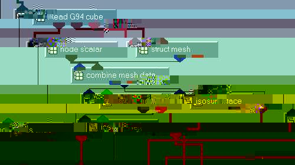
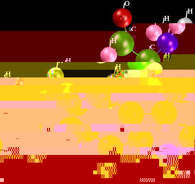
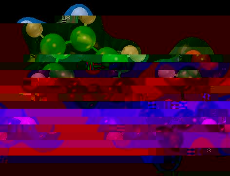

| Ken Flurchick | and | Libero Bartolotti |
| Ohio Supercomputer Center | North Carolina Supercomputing Center | |
| 1224 Kinnear Rd | 3021 Cornwallis Rd | |
| Columbus, OH 43212 | Research Triangle Park, NC 27709 |
In this article we present two AVS/EXPRESS modules which read the geometric structure and electronic properties of a molecular system from the CUBE output generated by the GAUSSIAN(c) package[6]. These modules are, in part, extensions from previous work, namely the AVS5 modules coord_to_geom and CUBE_to_Field. Electronic and structural information is obtained from either Density Functional Theory or Schrödinger Theory, using the GAUSSIAN(c) code. These modules, in conjunction with the built-in visualization modules, can display the geometric structure with electronic properties. In addition, using the enhanced User Interface capabilities in AVS/EXPRESS, a more user-friendly front-end has been developed. The capabilities of these modules will be discussed using several examples from current research activities.
Visualizing the results from quantum chemistry calculations is an important tool for scientists. Several AVS5 modules[1] were written to process the data from a number of quantum chemistry programs and have been restructured to utilize the enhanced User Interface capabilities of AVS/EXPRESS plus the easier data structure to pass array objects to construct the field data. We call this set of modules the Simple Molecular Display (SMD).
Quantum Mechanics CalculationsThe quantum chemistry packages calculate electron densities using either Density Functional Theory (DFT) via the Kohn-Sham (KS)[2] orbital-density equations:


where Dls = S i cil ci s is the density matrix and S mn is the overlap matrix which arises from the non-orthogonality of the basis functions.
For additional information about the different methodologies, see Szabo Ostlundslund[3], Parr and Yang[4] and Boyd et.al.[5]. The electron density contains both quantitative and qualitative information about the system of interest. Molecular properties can be determined from the electron density such as molecular bonding, reactivity indices, electrostatic potentials and aromatitcity.
The computational chemistry code GAUSSIAN is widely used by chemists, and can output a variety of molecular properties in addition to the molecular structure. Some of the molecular properties are:


To display the molecular properties, the visualization process begins by reading the molecular structure and electronic property information and converting this information to AVS/EXPRESS objects. This is accomplished by the AVS/EXPRESS module mol_c and Read_G94_cube. Figure 1 shows the subobjects in the modules mol_c and Figure 2 shows the subobjects of Read_G94_cube.
|
Figure 1 Subobject list for the module mol_c |

|
Figure 2 Subobject list for the module Read_G94_cube |

|
One important point to note is that the module mol_c outputs arrays of numbers which represent the atomic centers (array a_lst), atom colors (array rgb_lst), atomic radii (array r_lst) and bonding information (array connect_lst). The information is then passed to AVS/EXPRESS mesh modules. The module Read_G94_cube output both mesh coordinates array geometry) and the molecular property information (array Orbital_Data).
For the molecular structure, the modules point mesh (renamed as atomic point mesh), node color (renamed as atomic mesh color), node radii (renamed as atomic radii) and combine mesh (renamed as atomic field) are used (see figure 3) to create the molecular structure field.
|
Figure 3 Network to create molecular structure field. |

|
For the electronic structure (the ESP, HOMO and electron density), the modules struct mesh (structured mesh), node scalar (the molecular property data), and combine mesh data are used (see figure 4) to create the molecular property field. The field data is the passed to the usual bounds, isosurface and isoline modules to display the data.
|
Figure 4 Network for the molecular property display. |  |
In addition to the modules mol_c and Read_G94_cube, the user interface was designed using the interface modules (UI Kit). The UI kit contains numerous modules to manipulate windows, frames and widgets as part of the user interface. The UI for the molecular structure part is shown in figure 5. The parameters to select the type of file to read, the file name and the units parameters are options to select. The display options are in the bottom part of the UI, the type of display, options to display atom names and so on. The entire interface is constructed from modules built into AVS/EXPRESS, no additional coding was necessary. The network to construct the UI is shown in figure 6.
|
Figure 5 UI for mol_c. | |
|
Figure 6 Network to construct the mol_c UI. |

|
To demonstrate the use of these modules, we show various displays of the molecular system tryptophan (C11H12N2O). The structure and molecular properties were computed using GAUSSIAN 94[6]. Figure 7 shows three views of the display, the most common type of display is shown, namely the geometry of the molecule. Three different types of structure displays are shown. The upper left is CPK, upper right is ball_and_stick and the bottom image shows the structure labeled by atom names.
|
Figure 7 Display of Tryptophan. |
 |
The next two figures show the capabilities of combining AVS and results from calculations. Figure 8 shows the electron density plus the molecular structure and figure 9 depicts the HOMO and the molecular structure.
|
Figure 8 Electronic shape of Tryptophan. |  |
|
Figure 9 HOMO display of Tryptophan. |
Lastly, we show in figure 10, some contour lines of the electrostatic potential. Also in the image, is the 3D viewer used to display the results in AVS/EXPRESS.
|
Figure 10 Electrostatic potential contours of Tryptophan. |
|